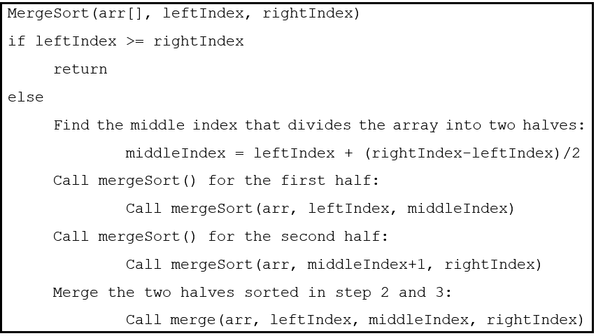

TÌM HIỂU VỀ THUẬT TOÁN SẮP XẾP TRỘN - MERGE SORT
1. Thuật toán Merge Sort hoạt động như thế nào?
Merge Sort hoạt động trên nguyên tắc chia để trị. Merge Sort chia nhỏ nhiều lần một mảng (array) thành hai mảng con bằng nhau cho đến khi mỗi mảng con (subarray) bao gồm một phần tử duy nhất. Cuối cùng, tất cả các mảng con đó được hợp nhất để sắp xếp mảng kết quả.
Khái niệm này có thể được giải thích hiệu quả hơn với sự trợ giúp của một ví dụ. Hãy xem xét một mảng không được sắp xếp với các phần tử sau: {16, 12, 15, 13, 19, 17, 11, 18}.

2. Thuật toán Merge Sort
Ở đây, thuật toán Merge Sort chia mảng thành hai nửa, gọi lại hàm cho hai nửa (calls itself for the two halves) và sau đó hợp nhất hai nửa đã sắp xếp.
3. Độ phức tạp về thời gian và bộ nhớ của thuật toán Merge Sort
Thuật toán Merge Sort có thể được biểu diễn dưới dạng quan hệ lặp lại sau:
T (n) = 2T (n / 2) + O (n)
Sau khi giải quan hệ lặp lại này bằng cách sử dụng định lý thợ (master’s theorem) hoặc phương pháp cây đệ quy (recurrence tree), bạn sẽ nhận được nghiệm (solution) là O (n logn). Do đó, độ phức tạp về thời gian (time complexity) của thuật toán Merge Sort là O (n logn).
Độ phức tạp thời gian trong trường hợp tốt nhất của Merge Sort: O (n logn)
Độ phức tạp thời gian theo trường hợp trung bình của Merge Sort: O (n logn)
Độ phức tạp thời gian trong trường hợp xấu nhất của Merge Sort: O (n logn)
Độ phức tạp của bộ nhớ phụ (auxiliary space complexity) của thuật toán Merge Sort là O (n). Vì n bộ nhớ phụ được yêu cầu trong việc thực hiện Merge Sort.
4. Triển khai thuật toán Merge Sort trong Python
Dưới đây là cách triển khai thuật toán Merge Sort trong Python:
# Python implementation of the
// Merge Sort algorithm
def mergeSort(arr):
if len(arr) > 1:
# Finding the middle index of the array
middleIndex = len(arr)//2
# Left half of the array
L = arr[:middleIndex]
# Right half of the array
R = arr[middleIndex:]
# Sorting the first half of the array
mergeSort(L)
# Sorting the second half of the array
mergeSort(R)
# Initial index of Left subarray
i = 0
# Initial index of Right subarray
j = 0
# Initial index of merged subarray
k = 0
# Copy data to temp arrays L[] and R[]
while i < len(L) and j < len(R):
if L[i] < R[j]:
arr[k] = L[i]
i = i + 1
else:
arr[k] = R[j]
j = j + 1
k = k + 1
# Checking if there're some remaining elements
while i < len(L):
arr[k] = L[i]
i = i + 1
k = k + 1
while j < len(R):
arr[k] = R[j]
j = j + 1
k = k + 1
# Function to print the elements
# of the array
def printArray(arr, size):
for i in range(size):
print(arr[i], end=" ")
print()
# Driver code
arr = [ 16, 12, 15, 13, 19, 17, 11, 18 ]
size = len(arr)
print("Unsorted array:")
printArray(arr, size)
mergeSort(arr)
print("Sorted array:")
printArray(arr, size)
Đầu ra:
Unsorted array:
16 12 15 13 19 17 11 18
Sorted array:
11 12 13 15 16 17 18 19